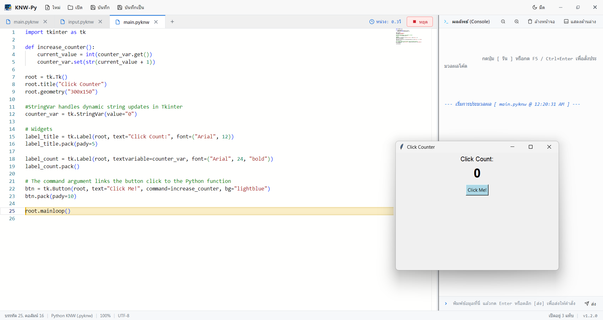
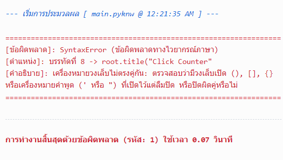

KNW-Py โปรแกรม Code Editor น้ำหนักเบา ออกแบบมาเพื่อการเรียนการสอนภาษา Python โดยเฉพาะ พร้อมฟังก์ชันรับค่าอินพุต input(), รองรับกราฟิก GUI ด้วย Tkinter ในตัว, ระบบไฮไลต์การทำงานทีละบรรทัด และระบบอธิบายข้อผิดพลาดภาษาไทย

ในโปรแกรมเขียนโค้ดทั่วไป เมื่อโค้ดมีข้อผิดพลาด ผู้เรียนมักจะพบกับ Traceback ภาษาอังกฤษที่ยาวและซับซ้อน ทำให้เกิดความกลัวและถอดใจได้ง่าย
KNW-Py ออกแบบระบบตรวจจับและแปลข้อผิดพลาดเป็นภาษาไทยที่เข้าใจง่าย ระบุตำแหน่งบรรทัดชัดเจน พร้อมคำอธิบายสาเหตุและวิธีแก้ไข เพื่อช่วยให้นักเรียนสามารถวิเคราะห์และแก้ไขปัญหาโค้ดได้ด้วยตนเอง

ออกแบบมาเพื่อแก้ไขปัญหาความยุ่งยากในการติดตั้งโปรแกรม ลดอุปสรรคสำหรับผู้เริ่มต้น และช่วยให้การเรียนการสอนดำเนินไปได้อย่างราบรื่น
บรรจุตัวรันไทม์ Python Embeddable มาพร้อมในตัวเครื่อง สามารถเปิดโปรแกรมและสั่งรันโค้ดได้ทันทีโดยไม่ต้องติดตั้งหรือตั้งค่า Environment Variable ให้ยุ่งยาก
มาพร้อมโมดูล Tcl/Tk เต็มรูปแบบ สามารถเขียนโปรแกรมสร้างหน้าต่าง Desktop GUI ปุ่มกด กล่องข้อความ และกราฟิก Canvas ได้ทันทีโดยไม่ต้องลงไลบรารีเสริม
มีช่องส่งค่าอินพุตสำหรับฟังก์ชัน input() ในตัว แสดงข้อความ Prompt แบบเรียลไทม์ และส่งค่าด้วยปุ่ม Enter ช่วยให้การฝึกเขียนโปรแกรมแบบโต้ตอบสะดวกสบาย
ระบบวิเคราะห์และแปลข้อผิดพลาดที่พบบ่อย (เช่น SyntaxError, IndentationError, NameError) เป็นภาษาไทยเข้าใจง่าย ชี้ตำแหน่งบรรทัดชัดเจน
โหมดหน่วงเวลาแสดงไฮไลต์ทีละบรรทัดขณะโปรแกรมกำลังทำงาน ช่วยให้ผู้เรียนมองเห็นลำดับการทำงานของ Loop, เงื่อนไข และฟังก์ชันได้อย่างเป็นรูปธรรม
ลงลายเซ็นดิจิทัล HMAC-SHA256 ป้องกันการเปิดดัดแปลงหรือวางโค้ดจากโปรแกรมภายนอก เพื่อส่งเสริมให้ผู้เรียนได้ฝึกฝนการพิมพ์โค้ดด้วยตนเอง
สลับระหว่าง Dark Mode และ Light Mode ได้อย่างง่ายดายด้วยปุ่มเดียว พร้อมการผสานกับ Monaco Editor อย่างสมบูรณ์แบบเพื่อการอ่านโค้ดที่สบายตา
ตรวจสอบเวอร์ชันใหม่จาก GitHub Releases เมื่อเริ่มโปรแกรม พร้อมให้คุณดาวน์โหลดและติดตั้งตัวอัปเดตได้โดยตรงทันทีจากภายในโปรแกรม